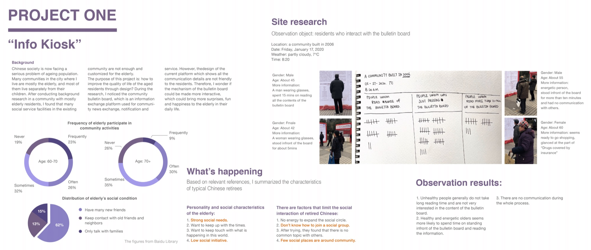
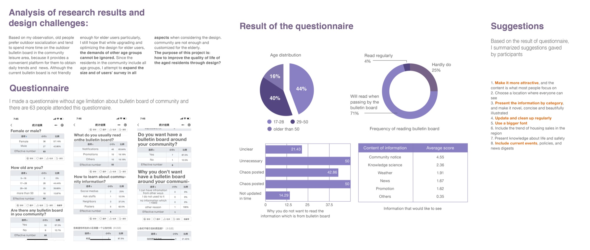
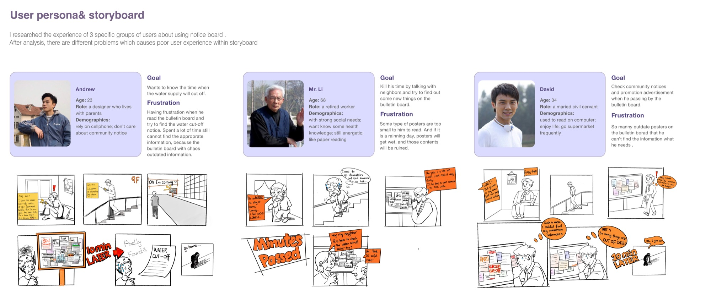
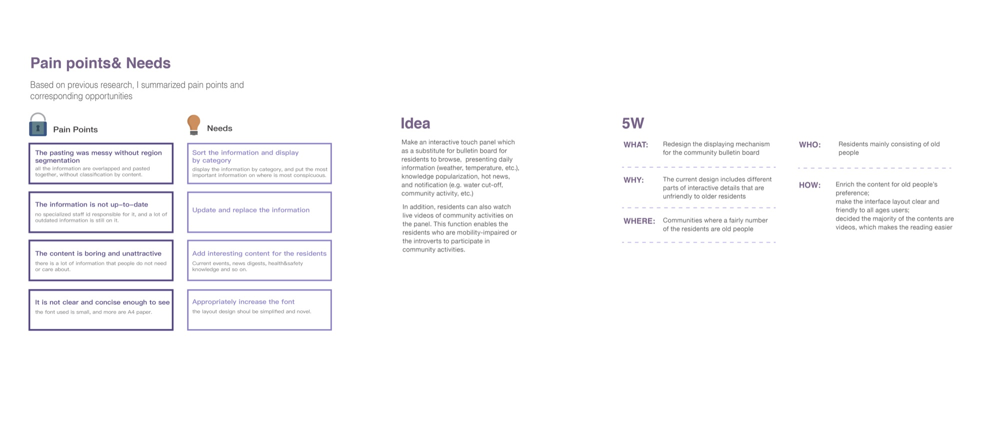
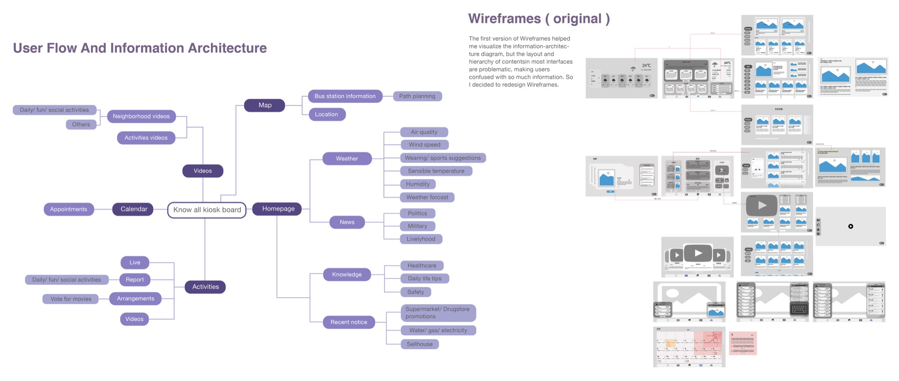
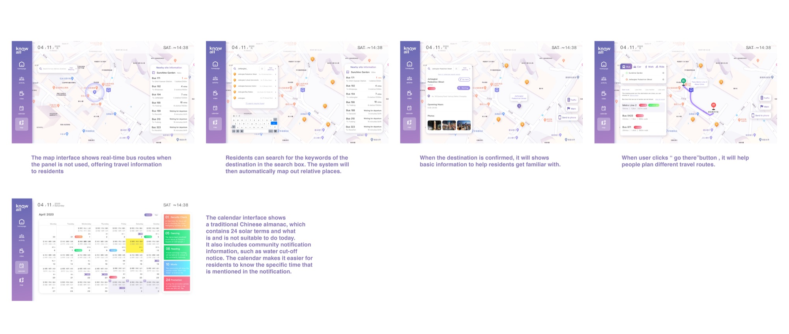
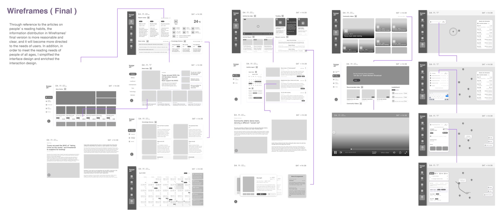
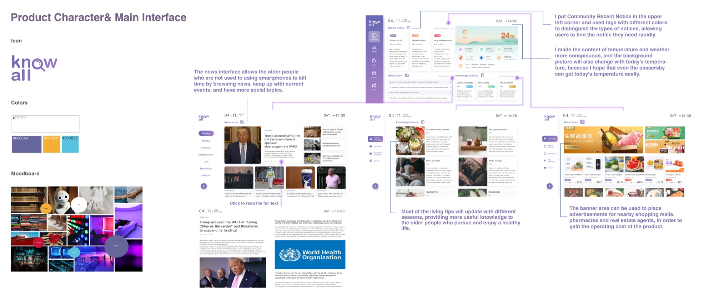
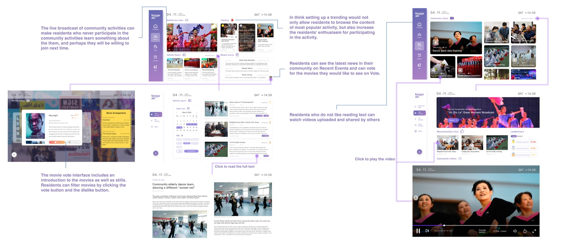
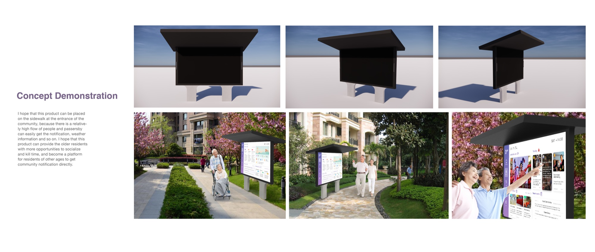

Know-all
Enabling all residents to browse updated information easily, while encouraging older residents to participate in community activities more often.
July 2020 · Individual project

Type
Individual project
Time
July 2020
Tools
Sketch, Axure, Figma
Overview
Information kiosk design.
China currently faces an ageing population, and many older communities in my city are made up mainly of elderly residents. However, most infrastructure in these existing communities is not user-friendly, especially for the elderly.
After research, I decided to use the bulletin board built into every old community as a touchpoint to provide updated information, notifications and news. This could enable more interaction among residents, and bring fun and happiness to the elderly in their retirement.
The work
*Note: the full functionality cannot be conveyed in this format, due to the failure of a previous MacBook.*








